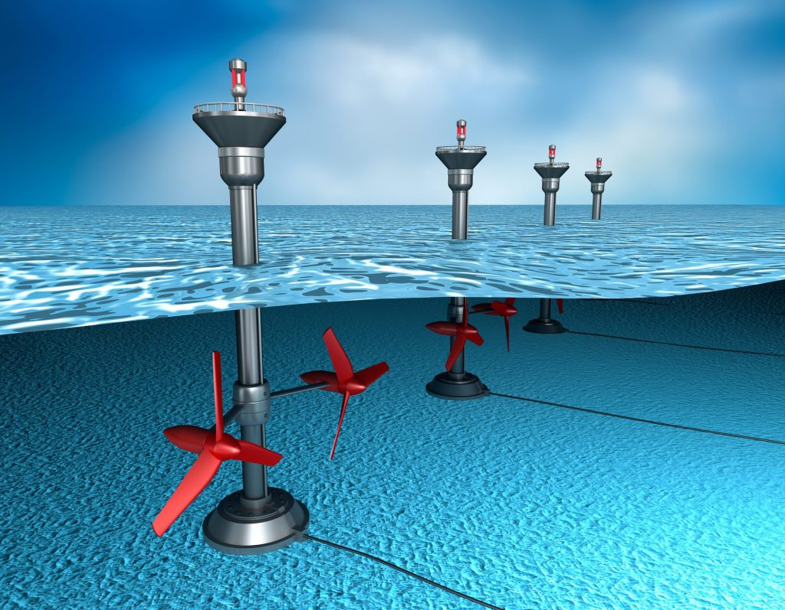

L'energia marina
I mari e gli oceani rappresentano un’importante risorsa per le energie rinnovabili. Le principali fonti di energia marina da cui è possibile estrarre energia sono: le onde, le correnti, le maree, il gradiente di salinità ed il gradiente di temperatura.
Tra queste, le tecnologie più mature sono quelle legate alle maree ed il moto ondoso. L’Italia, con quasi 8.000 km di coste, potrebbe essere uno dei paesi leader per la ricerca, lo sviluppo e l’implementazione di nuove tecnologie marine. Ad eccezione delle potenzialità di sfruttamento eolico, il Mar Mediterraneo presenta limiti naturali in quanto il dislivello mareale è di lieve entità ed il potenziale energetico da moto ondoso, se confrontato ad esempio con le aree oceaniche, è di un ordine di grandezza inferiore.
COME SI RICAVA ENERGIA DAL MARE
L’energia da correnti di marea è creata dai cicli locali regolari diurni o semi-diurni. L’energia cinetica può essere sfruttata normalmente in aree costiere e in particolare dove ci sono stretti, isole e passaggi.
La conversione di energia termica (OTEC) usa le differenze di temperatura tra la superficie e l’acqua profonda, in un ciclo di calore per produrre energia elettrica. In particolare, le aree tropicali sono più favorevoli per lo sfruttamento di tale risorsa in quanto il gradiente di temperatura è maggiore.
Lo sfruttamento del potenziale osmotico deriva dalla differenza di salinità tra acqua di mare e acque dolci in aree continentali. Tale sfruttamento è possibile laddove i flussi di acqua dolce in mare sono molto abbondanti, e a tal proposito i paesi nordici risultano i più promettenti. Queste ultime due risorse sono ancora ad uno stadio di progettazione teorica.
L’estrazione di energia dalle onde avviene sfruttando la differenza di energia potenziale gravitazionale tra cavo e cresta. Le tecnologie di convertitori da moto ondoso fino ad ora esistenti a livello internazionale, si dividono in varie categorie sulla base della posizione rispetto alla costa (linea di riva, area costiera, largo) e sul principio di funzionamento.
Dal principio generale sono stati ideati diverse tipologie di dispositivi di seguito elencati:
1. Oscillating Water Column (OWC): si sfrutta l’oscillazione del fluido all’interno di una camera che spinge l’aria attraverso una turbina.
2. Overtopping: si sfrutta la risalita dell’onda su di una rampa in cui a varie altezze si aprono fenditure per l’ingresso dell’acqua, la quale viene fatta poi fluire da diverse altezze attraverso delle turbine idrauliche.
3. Oscillating Wave Surge Converter (OWSC): sfrutta l’oscillazione di piastre galleggianti collegate a delle pompe idrauliche, a loro volta connesse ad una turbina: le onde che colpiscono la barriera sollevano le piastre galleggianti che comprimono, nel loro movimento, le pompe idrauliche, le quali trasferiscono l’energia immagazzinata nel fluido interno al rotore della turbina.
4. Submerged Pressure Differential: si sfrutta l’oscillazione di una serie di boe immerse nel mezzo acquatico e ancorate al fondo, il cui continuo movimento oscillatorio opera come pistone per pressurizzare l’acqua marina.
5. Point Absorver: Sfrutta il sollevamento e l’abbassamento di un oggetto in galleggiamento durante il passaggio dell’onda per azionare una pompa idraulica.
6. Attenuator: dispositivo che agisce in maniera simile al sistema precedente, con più segmenti galleggianti collegati fra loro e ortogonali rispetto alle onde in arrivo.